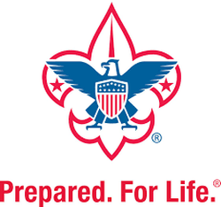

Previous Occupations
I've been blessed with the opportunity at several jobs and organizations in my life. I learned constantly how to works and cooperate with other people and how to lead when needed. Throughout high school I was able to be a personal landscaper in which I performed labor in many of my neighbors yards. It was honestly very fun and I enjoyed getting to know them. I felt like it brought our community closer
My first job out of high school was a full-time student taking 16+ credits, but when I came home for a long winter break I was able to work at Evergreen Nursery. I was a seasonal worker and was able to help people pick out their Christmas trees, cut them, net them, place a stand on them, and finaly load and tie them to their car. It was hard work, but very fulfilling and enjoyable.
Following my first year of college I worked on a top 100 public golf course for 6-7 months. Maderas Golf Course is where I learned a lot about how work enviroments can be frustrating. It seemed as everyone was at each others' throats all the time. But I stayed out of it and just learned to put my head down and work. Overall, was a good experience and allowed me to save enough money for my mission.
Boy Scouts of America
As a Boy Scout of America I was able to earn over 30 merit badges. Each one had its own unique requirements and learning experiences. They were a lot of hard work, but I got to do cool things like small boat sailing! I met great people and developed great qualities that will benefit me in my future. I went camping often, built a makeshift shelter in the pouring rain with only two space blankets, and learned many other life skills. When I was Senior Patrol Leader I planned and worked hard to be organized and make each Boys Scout trip as much fun as possible. I loved teaching the younger scouts new skills and tips to an easier campout.
"On my honor, I will do my duty to God and my country, and obey the Scout Law. To help other people at all times, To keep myself physically strong, Mentally awake and morally straight." - Scout Oath To go places and do things that have never been done before – that’s what living is all about.